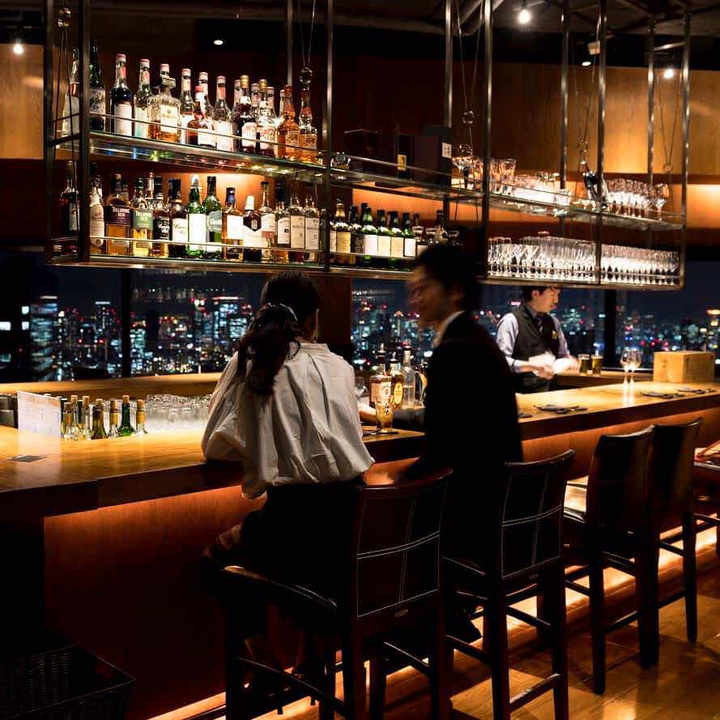
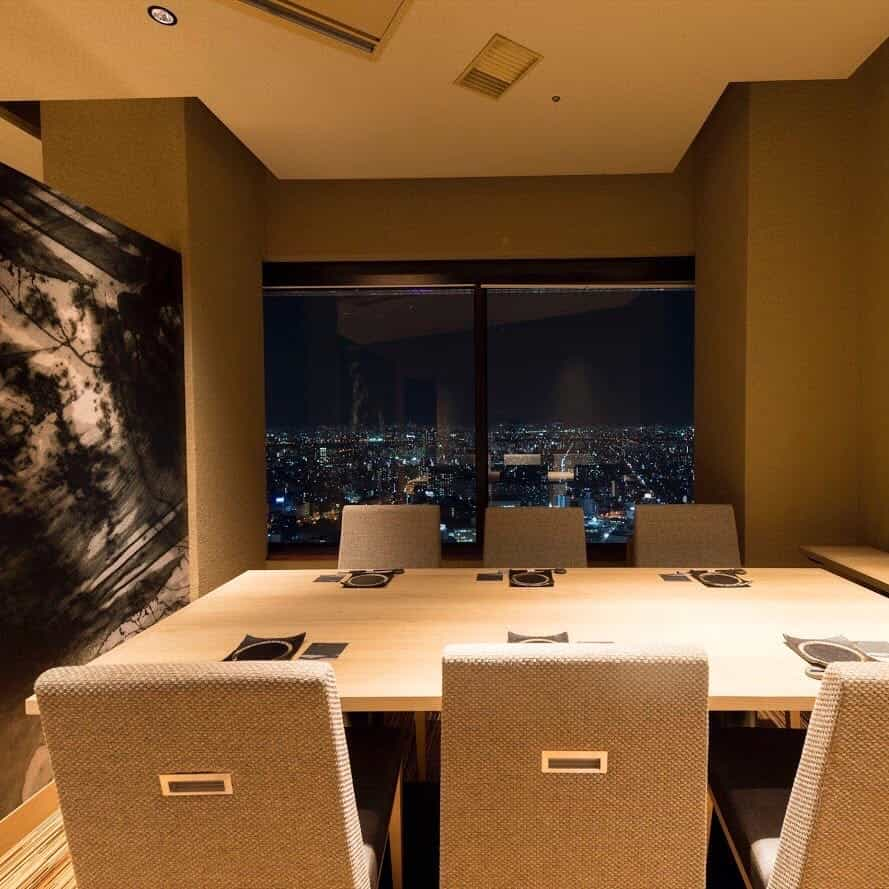
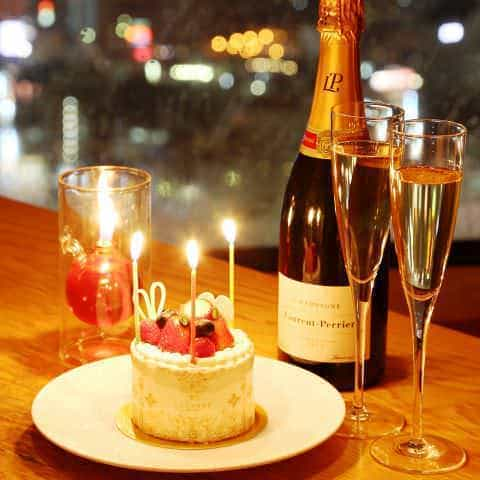
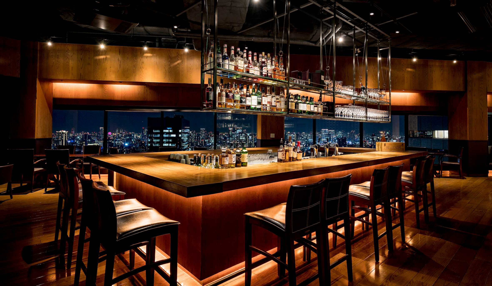
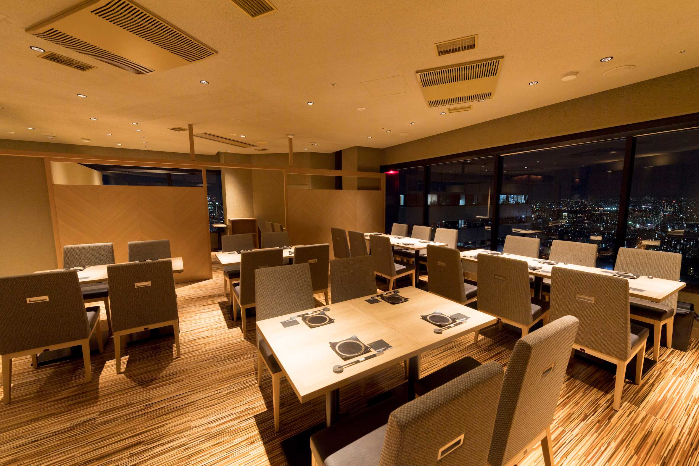
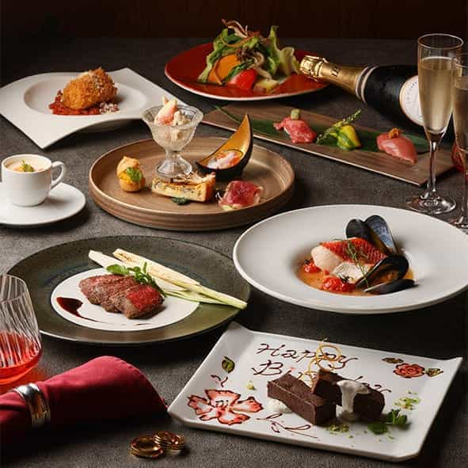
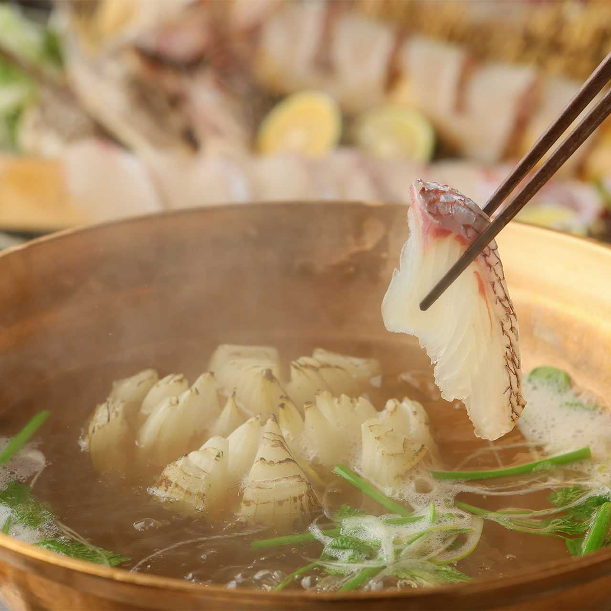
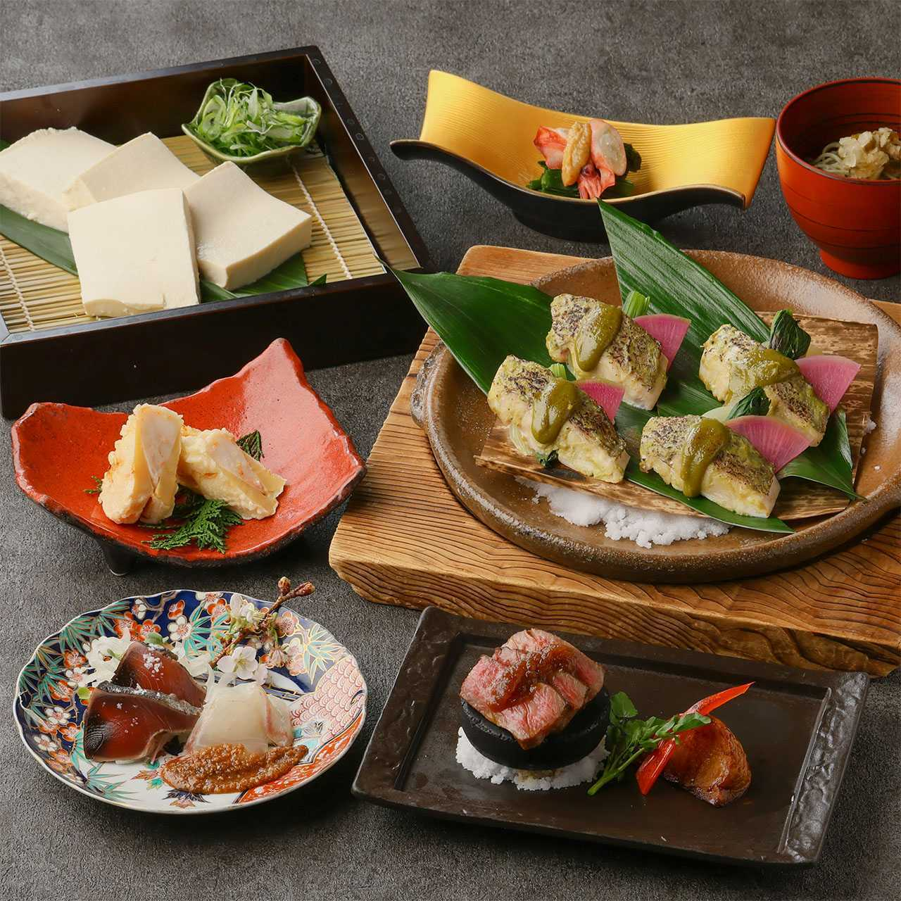
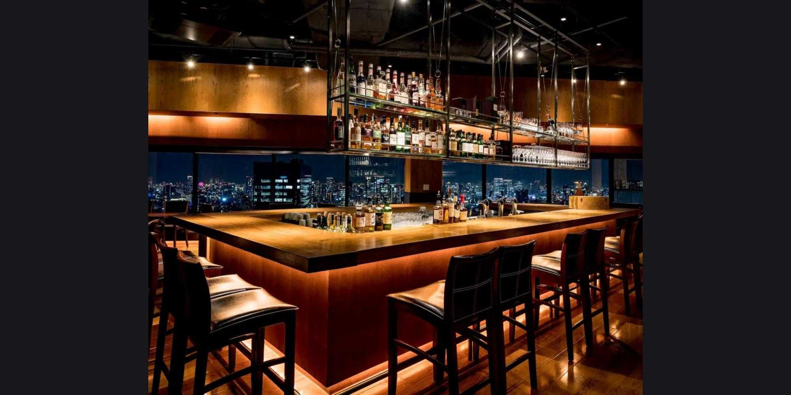

Galerie photos










Kevin, Loïc, May Nhia, Stéphanie, Estelle
Du 5 Avril au 27 Avril 2026
Adresse japonaise chic au 38e étage d'Osaka Twin 21 avec vue sur Osaka Castle, pratique pour un repas plus posé ou une soirée en groupe.









Dynamic Kitchen & Bar SAN est une option pratique si vous voulez un repas avec vue, une ambiance plus calme et une vraie réservation en ligne à Osaka, sans partir sur un buffet.
Conversion indicative sur base 1 EUR = 183.67 JPY (BCE, 10/03/2026). Les prix viennent du menu officiel consulté le 11/03/2026.